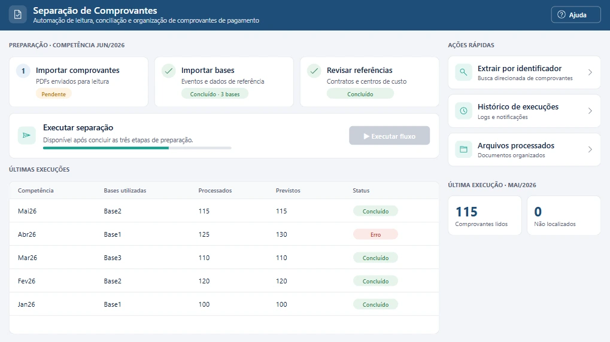
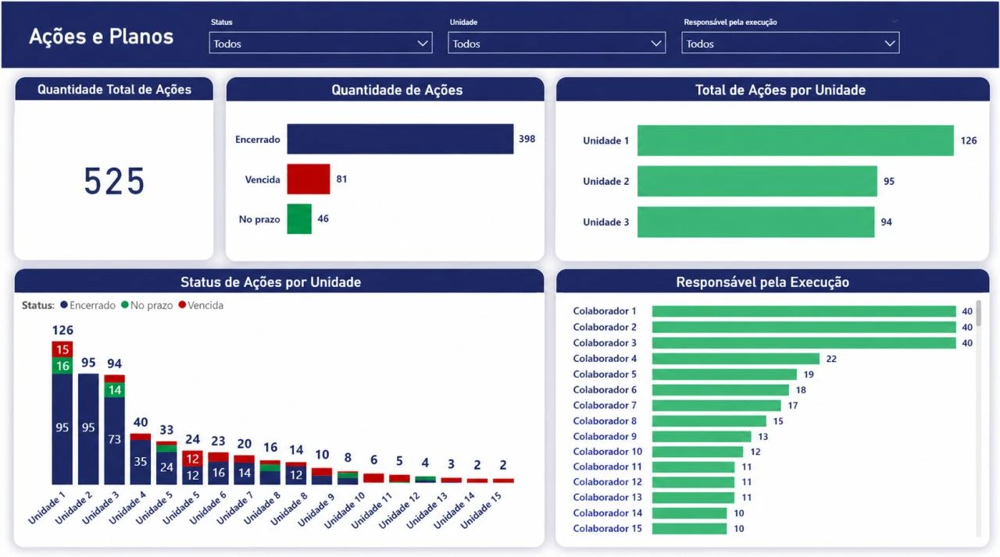
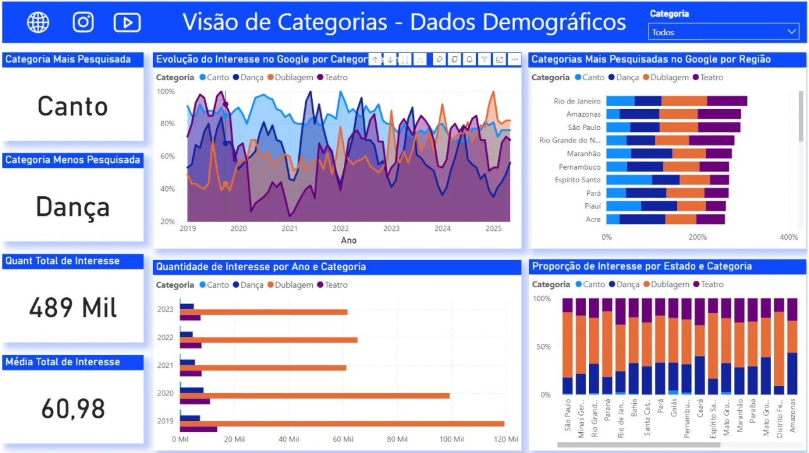

Automação & RPA
Processos mais inteligentes, resultados mais eficientes. Rotinas com Power Automate, Python e VBA que eliminam trabalho manual.
Tecnologia que transforma. Soluções que conectam.
Eu sou Mylenna Duarte, |
Tecnologia com propósito.
Soluções que fazem a diferença.
Sou Analista de Dados e Automação, com cerca de 2 anos de experiência em análise, tratamento e automação de dados no setor logístico. Uso Power BI, SQL, Python, Power Query, DAX e Power Platform para transformar planilhas e rotinas manuais em dashboards, KPIs, relatórios e sistemas integrados.
Hoje sou a principal responsável por soluções de dados e automação para as áreas de RH, CCO, QSMS e TI de uma empresa de logística — projetos que já geram mais de 200 horas por mês de economia operacional. Para o seu negócio, faço o mesmo: entendo o processo, automatizo o que é repetitivo e entrego o resultado medido. E, claro, com o meu jeito: profissional, criativo e com um toque de rosa. 💗
Da ideia ao resultado: soluções completas, pensadas para o seu negócio.
Processos mais inteligentes, resultados mais eficientes. Rotinas com Power Automate, Python e VBA que eliminam trabalho manual.
Dashboards, KPIs e relatórios em Power BI com SQL, Power Query e DAX para transformar dados em decisões.
Soluções completas e personalizadas: Power Apps, Dataverse, APIs e integrações entre sistemas do seu negócio.
Atendimento ágil e especializado quando você mais precisa: sistemas corporativos, bases de dados e Office 365.
Design moderno, criativo e funcional que comunica e conecta: artes, apresentações e materiais digitais para o seu negócio.
O mesmo caminho que sigo nos projetos que já estão em produção.
Você me conta pelo WhatsApp o que toma tempo da sua equipe ou o que precisa enxergar nos números.
Mapeio o processo e as regras de negócio com quem executa, para achar onde está o gargalo.
Com o escopo claro, envio a proposta. Não há pacote fechado: o orçamento é feito para a sua necessidade.
Construo a automação, a base ou o painel e testo tudo antes de liberar.
Implanto a solução e deixo tudo documentado para a sua equipe usar no dia a dia.
O que uso para construir cada solução, da automação ao dashboard.
Soluções reais, com resultados medidos em horas economizadas e produtividade.

Automação 2 telas · ampliarLeitura e tratamento de mais de 2.000 comprovantes por mês, cruzamento com eventos de pagamento e classificação automática dos arquivos por colaborador, cliente e evento. Quem usa só importa os arquivos e acompanha o resultado pelo aplicativo.
Plataforma corporativa na Power Platform que substituiu formulários estáticos e processamento manual em Excel/Access e Google Forms, com rastreabilidade total.

Dados & BI 2 telas · ampliarRelatório para a área de segurança do trabalho com monitoramento de planos de ação e indicadores. A extração e a atualização da base foram automatizadas com Power Automate, substituindo controles e cálculos manuais.
 Dados & BI
2 telas · ampliar
Dados & BI
2 telas · ampliar
Projeto prático de Big Data: dashboard analítico de homicídios dolosos no RJ, com grandes volumes e séries históricas tratados em Linguagem M, modelagem DAX e método de Tukey (IQR) para detectar outliers por AISP.

Dados & BI 3 telas · ampliarProjeto acadêmico: análise de gostos e interesses do público para orientar estratégias de marketing e captação de clientes, com dashboard e KPIs. O cliente confirmou que os resultados batem com a experiência de negócio dele e vai usá-los no marketing.
Rotina que trata, classifica e organiza XMLs de FGTS e INSS, separando por CNPJ do cliente e renomeando pelo CPF do colaborador.
Separação automática de cartões de ponto em PDF e renomeação individual pelo CPF, garantindo organização e recuperação rápida dos arquivos.
Um recado direto de quem teve o problema resolvido e a avaliação formal de um cliente, por questionário.
Muito obrigado pela agilidade e prática, resolveu meu problema em 5 minutos.
Resumo do retorno O dono, especialista em teatro, disse que os dados sobre teatro batem com a experiência dele e que aprendeu sobre o público de dublagem, área que não domina. Não viu nenhum problema no projeto.
Me conta o que você precisa resolver. Respondo rapidinho pelo WhatsApp.